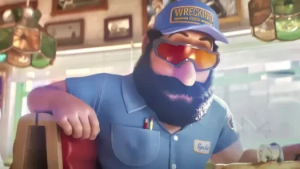
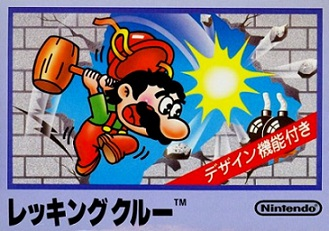
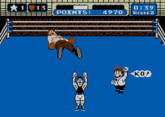

こんにちは、ザクザク食感です。
映画「ザ・スーパーマリオブラザーズ・ムービー」を見てきました。
最高最高最高～～～！！！
海外ですでにとんでもない売上を記録しているらしいので、「今から面白い映画を見るぞ～！」という気持ちで劇場に向かいましたが、その期待を上回るほど楽しい映画でした。
ついさっき見てきたので、気持ちが新鮮な内に感想とか気づいた小ネタをだーっと書きます。
この先ネタバレ注意です！
マリオラップ
映画序盤で、マリオ兄弟が営む配管工事屋さんのCM↑が流れます。
この映像は事前に公開されていたので既に見ていましたが、本当に最高ですよね。
マリオの映画をやるという話を聞いたときは少し不安もありましたが、このレベルの熱量でつくってくれるなら最高の作品になるに違いないと確信したのを覚えています。
映画ではこのCMが実際に流れて、そこから物語が始まっていきます。
今調べて知ったのですが、「The Super Mario Bros. Super Show!」という海外の番組が元ネタのようです。これを見て育ちたかったな～
キノコ王国住みじゃない
マリオの冒険の舞台はたいていキノコ王国から始まりますが、先ほどのCMを見てもらえれば分かるとおり、ニューヨーク州のブルックリンから物語が始まります。
これは映画オリジナルの設定ではなく、マリオブラザーズの頃の裏設定です（たしか）。近年のマリオの設定的にキノコ王国の物語だと思っていたので、少し驚きました。
しかもこれがファンサービスではなく、現実にある土地から物語が始まることがいいフックになっているので、さすがイルミネーションや……と思いました。
ファンサ
まださっきのカットから話が進まないのですが、自分たちのCMが流れているのを見て喜ぶマリオとルイージに嫌味を言ってくる、スパイクというおじさんが出てきます。

最初はオリキャラか？って思ってたんですけど、帽子の文字を見ると「WRECKING」と書いてあります。
レッキングといえば、マリオ兄弟が解体工事をする「レッキングクルー」というゲームがあります。
映画が終わった後に気になって調べてみると、ニンテンドー公式からこのようなツイートがありました。
ファミリーコンピュータ向けソフト『レッキングクルー』などに登場するキャラクター「ブラッキー」の名称を、欧米での名称と同じ「スパイク」に変更いたします。なお、2023年4月28日に公開される『ザ・スーパーマリオブラザーズ・ムービー』での名称も、同様に「スパイク」となっています。 pic.twitter.com/HhTXEOmzxn
— 任天堂株式会社 (@Nintendo) April 20, 2023
レッキングクルーの妨害してくるキャラにもちゃんと名前あったんだ……
マリオは以前の仕事を辞めて、弟と共に配管工の仕事を始めた というような背景が語られるので、恐らくマリオの前職はレッキングクルー（解体工事屋さん）で、スパイクはその頃の同僚といった感じなのでしょう。
いろんなゲームの設定をうまく物語に落とし込んでてすごいな……と感心しました。
 レッキングクルー
あとこれは完全なファンサなのですが、CMが流れているお店の名前が「PUNCH OUT 〇〇（読めなかった）」でした。これもニンテンドーから出ている「パンチアウト！！」というボクシングのゲームが由来だと思います。
このゲームの主人公はリトル・マックという別のキャラなのですが、レフェリーをマリオが務めています。たぶんその流れで採用されたのでしょう。
 パンチアウト！！（KOって言ってるのがマリオ）
あと、ルイージの携帯にお客さんから電話がかかってくるシーンがあるのですが、その着信音がゲームキューブの起動音でした。
あと壁にダックハントのプレイ画面の絵が貼ってあったり、原作のマリオの声（チャールズマーティネーさん）の、見た目がマリオにそっくりなおじさんがアーケードのドンキーコングをプレイしていたり……
開始10分も経っていないのにめちゃくちゃファンサービスがあってずっと楽しいです。
ヒーローじゃない
ルイージと一緒に配管工の仕事を頑張るマリオですが、なかなかうまくいきません。
初めてのお客さん（イルミネーションの作品は怪盗グルーしか知らないけど、たぶんペットのキャラ？）の仕事を失敗して、落ち込んで家に帰ります。
家に帰ると、マリオの家族（なぜかめっちゃ大家族）が食卓に集まっています。
マリオがご飯を食べていると、マリオの兄や父が仕事について嫌味をいってきて、それを聞いてマリオは部屋に戻ってしまいます。（そのあとマリオが部屋でパルテナの鏡をしていてめちゃくちゃ良かった）
こういうアニメ映画ではお決まりのワンシーンですが、マリオがそれをやっているのはすごく新鮮でした。
マリオシリーズは基本的にクッパに攫われたピーチを助けるだけの物語ですし、ペーパーマリオなどの作品でもマリオはしゃべらないキャラなことが多いので、キノコ王国のスーパースターとしての像しか描かれていません。
ですがこの映画では、マリオが成長していく物語が展開されていくので、
それでは、さようなら。